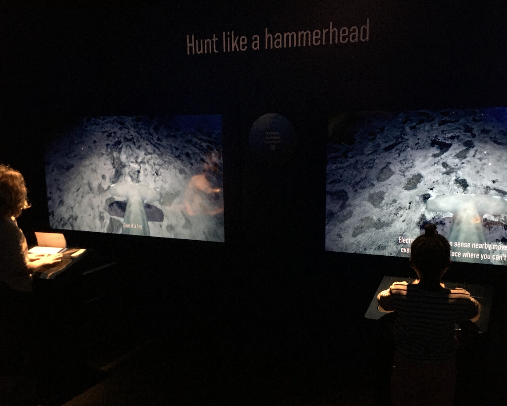
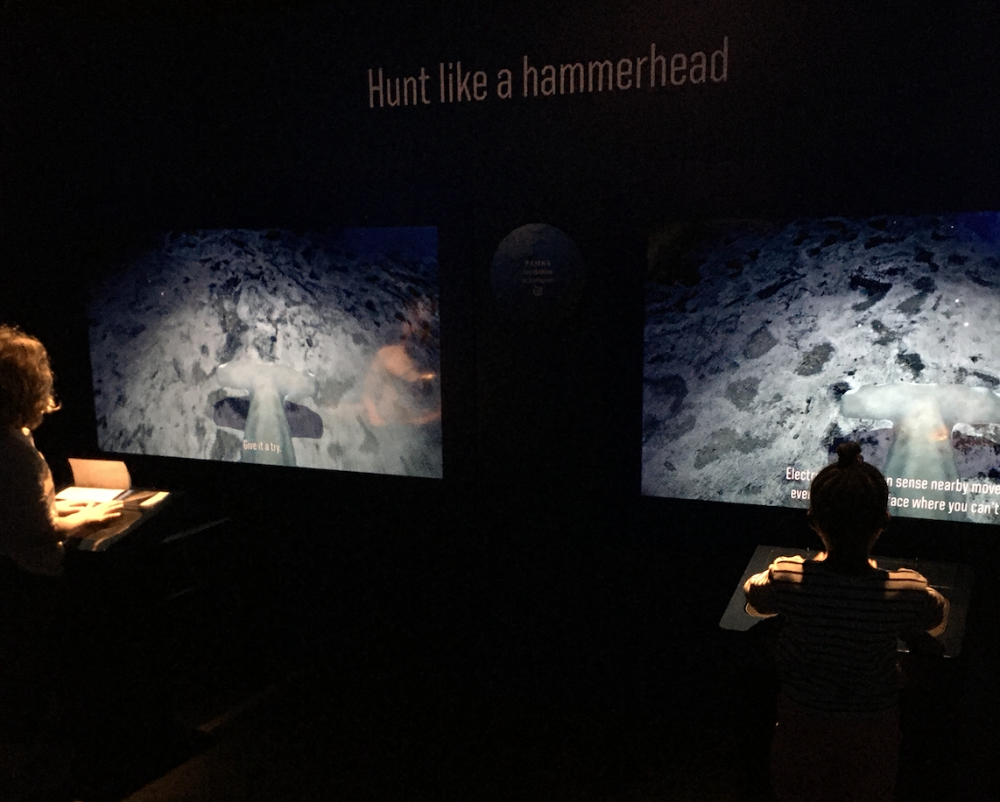

"Hunt Like a Hammerhead" is an interactive experience where users steer a hammerhead shark through an ocean environment and hunt for stingrays. The game uses an Ultrahaptics board from Ultraleap for the controls.
The piece is a part of the American Museum of Natural History’s special exhibition, "Sharks", which opened in December of 2021.
I worked on a small team at AMNH to create Hunt Like a Hammerhead. I worked in Unity, using C#, to develop the gameplay logic and movement for the shark.


 
